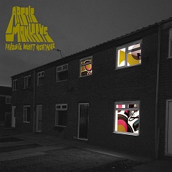
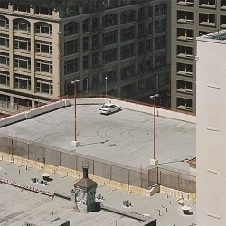

"Whatever People Say I Am, That's What I'm Not (2006)"
- 01 - The View From The Afternoon
- 02 - I Bet You Look Good On The Dancefloor
- 03 - Fake Tales Of San Francisco
- 04 - Dancing Shoes
- 05 - You Probably Couldn't See For The Lights But You Were Staring Straight At Me
- 06 - Still Take You Home
- 07 - Riot Van
- 08 - Red Light Indicates Doors Are Secured
- 09 - Mardy Bum
- 10 - Perhaps Vampires Is A Bit Strong But..
- 11 - When The Sun Goes Down
- 12 - From The Ritz To The Rubble
- 13 - A Certain Romance
"Favourite Worst Nightmare (2007)"

- 01 - Brianstorm
- 02 - Teddy Picker
- 03 - D Is For Dangerous
- 04 - Balaclava
- 05 - Fluorescent Adolescent
- 06 - Only Ones Who Know
- 07 - Do Me A Favour
- 08 - This House Is A Circus
- 09 - If You Were There, Beware
- 10 - The Bad Thing
- 11 - Old Yellow Bricks
- 12 - 505
- 13 - Da Frame 2R
- 14 - Matador
"Humbug (2009)"
- 01 - My Propeller
- 02 - Crying Lightning
- 03 - Dangerous Animals
- 04 - Secret Door
- 05 - Potion Approaching
- 06 - Fire And The Thud
- 07 - Cornerstone
- 08 - Dance Little Liar
- 09 - Pretty Visitors
- 10 - The Jeweller's Hands
- 11 - I Haven't Got My Strange (Japan bonus track)
- 12 - Red Right Hand (Japan bonus track)
"Suck It And See (2011)"
- 01 - She's Thunderstorms
- 02 - Black Treacle
- 03 - Brick By Brick
- 04 - The Hellcat Spangled Shalalala
- 05 - Don't Sit Down 'cause I've Moved Your Chair
- 06 - Library Pictures
- 07 - All My Own Stunts
- 08 - Reckless Serenade
- 09 - Piledriver Waltz
- 10 - Love Is A Laserquest
- 11 - Suck It And See
- 12 - That's Where You're Wrong
"AM (2013)"
- 01 - Do I Wanna Know
- 02 - R U Mine
- 03 - One for the Road
- 04 - Arabella
- 05 - I Want It All
- 06 - No. 1 Party Anthem
- 07 - Mad Sounds
- 08 - Fireside
- 09 - Why’d You Only Call Me When You’re High
- 10 - Snap Out of It
- 11 - Knee Socks
- 12 - I Wanna Be Yours
- 13 - 2013 (Japan Bonus Track)
"Tranquility Base, Hotel & Casino (2018)"
- 01 - Star Treatment
- 02 - One Point Perspective
- 03 - American Sports
- 04 - Tranquility Base Hotel and Casino
- 05 - Golden Trunks
- 06 - Four Out of Five
- 07 - The Worlds First Ever Monster Truck Front Flip
- 08 - Science Fiction
- 09 - She Looks Like Fun
- 10 - Batphone
- 11 - The Ultracheese
- 12 - Anyways (B-Side)
"The Car" (Lanzamiento: 21 de Octubre 2022)

- 01 - There’d Better Be A Mirrorball
- 02 - I Ain’t Quite Where I Think I Am
- 03 - Sculptures Of Anything Goes
- 04 - Jet Skis On The Moat
- 05 - Body Paint
- 06 - The Car
- 07 - Big Ideas
- 08 - Hello You
- 09 - Mr Schwartz
- 10 - Perfect Sense